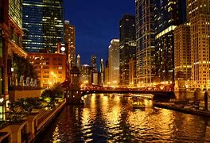
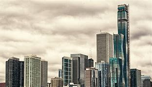
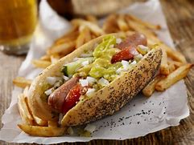
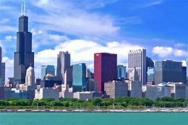
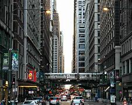

The name "Chicago" is derived from a French rendering of the indigenous Miami-Illinois word shikaakwa for a wild relative of the onion; it is known to botanists as Allium tricoccum and known more commonly as "ramps". The first known reference to the site of the current city of Chicago as "Checagou" was by Robert de LaSalle around 1679 in a memoir. Population:2.71 million Attractions:Sydney Opera House,Taronga Zoo Sydney,The Rocks President:Paul Alivisatos
     Home